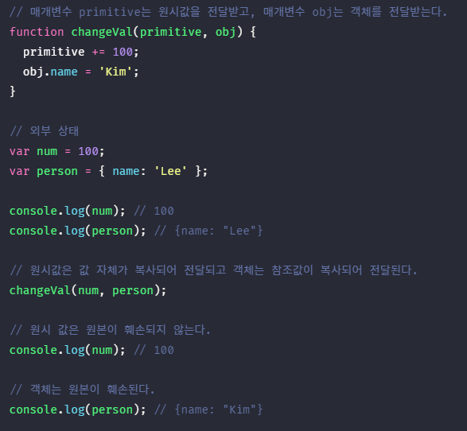
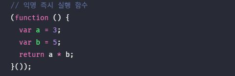
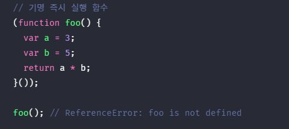

1. 함수란? #
함수는 자바스크립트에서 가장 중요한 핵심 개념! 또 다른 자바스크립트의 핵심 개념인 스코프, 실행 컨텍스트, 클로저, 생성자 함수에 의한 객체 생성, 메소드, this, 프로토타입, 모듈화 등이 모두 함수와 깊은 관련이 있다. 따라서 함수는 자바스크립트를 정확히 이해하고 사용하기 위해 피해갈 수 없는 핵심 중의 핵심이라고 할 수 있다.
함수는 일련의 과정을 문들로 구현하고 코드 블록으로 감싸서 하나의 실행 단위로 정의할 수 있다. 이때 함수는 내부로 입력을 전달받을 수 있는 매개변수를 받아 참조하여 사용할 수 있다. 그리고 함수는 반드시 반환값이 존재한다.

함수는 함수 정의를 통해 생성한다. 자바스크립트의 함수는 다양한 방법으로 정의할 수 있다. 아래는 함수 선언문을 통해 함수를 정의한 예제다.
// 함수 정의
function add(x, y) {
return x + y;
}
위 처럼 함수를 정의할 수 있지만 함수는 반드시 명시적으로 호출해주어야 한다. 함수를 호출하면 함수 몸체 즉 코드 블록이 일괄적으로 실행되고 실행 후 반환값을 반환한다.
// 함수 호출
var result = add(3, 2)
console.log(result); // 5
2. 함수의 사용 이유 #
함수는 필요할 때 마다 호출해서 사용할 수 있다. 즉 호출한 만큼 여러번 사용할 수 있다. 실행 시점을 개발자가 결정할 수 있고 몇 번이든 재사용이 가능하다. 만약 동일한 작업을 반복한다면 함수를 정의한 후 해당 작업을 함수가 실행하도록 하면 된다. 그래서 함수에 이름을 정의할 때에는 이름(식별자)을 동사로 작성한다.

이 처럼 함수는 유지보수와 가독성을 중복된 코드 수의 비례하여 배수 만큼 증가시켜주는 효과가 있다.
3. 함수 리터럴 #
이전에 result라는 변수에 함수 호출을 할당해주었다. 함수 호출 뿐만 아니라 함수 자체도 변수에 할당할 수 있다. 함수 리터럴은 function 키워드, 함수 이름, 매개변수 목록 그리고 함수 몸체로 구성된다
// 변수에 함수 리터럴을 할당
var add = function add(x, y) {
return x + y;
};
함수 리터럴의 구성 요소
- 함수 이름
- 함수 이름은 식별자이다. 따라서 식별자 네이밍 규칙을 준수해야 한다.
- 함수 이름은 함수 몸체 내에서만 참조할 수 있는 식별자다.
- 함수 이름은 생략할 수 있다. 이름이 있는 함수를 기명 함수, 이름이 없는 함수를 익명 함수라 한다.
- 매개변수 목록
- 0개 이상의 매개변수를 소괄호로 감싸고 쉼표로 구분한다.
- 매개변수에는 함수 호출문의 인수가 순서대로 할당된다. 즉, 매개변수 목록은 순서에 의미가 있다.
- 매개변수는 함수 몸체 내에서 변수와 동일하게 취급된다. 따라서 매개변수도 변수와 마찬가지로 식별자 네이밍 규칙을 준수해야 한다.
- 함수 몸체
- 함수가 호출되었을 때 일괄적으로 실행될 문들을 하나의 실행 단위로 정의한 코드 블록이다.
- 함수 몸체는 함수 호출에 의해 실행된다.
리터럴은 사람이 이해할 수 있는 문자 또는 약속된 기호를 사용하여 값을 생성하는 표기 방식을 말한다. 즉, 리터럴은 값을 생성하기 위한 표기법이다. 따라서 함수 리터럴도 평가되어 값을 생성하며 이 값은 객체다. 즉, 함수는 객체다.
함수는 객체이지만 일반 객체와는 다르다. 일반 객체는 호출할 수 없지만 함수는 호출할 수 있다. 그리고 일반 객체에는 없는 함수 객체만의 고유한 프로퍼티를 갖는다.
함수가 객체라는 사실은 다른 프로그래밍 언어와 구별되는 자바스크립트의 중요한 특징이다.
4. 함수 정의 #
함수 정의란 함수를 호출하기 이전에 함수를 생성하고 실행할 문, 반환 값을 지정하는 것을 말한다.
함수를 정의하는 방법은 4가지 있다.
- 함수 선언문
function add(x, y) { return x + y; } - 함수 표현식
var add = function(x, y) { return x + y; }; - Function 생성자 함수
var add = new Function('x', 'y', 'return x + y'); - 화살표 함수
var add = (x, y) ==> x + y;
모든 함수 정의 방식은 함수를 정의한다는 면에서는 동일하다. 단, 미묘하지만 중요한 차이가 있다.
- 변수 선언과 함수 정의
- 변수는 선언한다고 했지만 함수는 정의한다고 표현했다. 함수 선언문이 평가되면 식별자가 암묵적으로 생성되고 함수 객체가 할당된다. 따라서 ECMAScript 사양에서도 변수에는 선언, 함수에는 정의라고 표현하고 있다.
4.1. 함수 선언문 #
함수 선언문은 함수 리터럴과 형태가 동일하다. 단, 함수 리터럴은 함수 이름을 생략할 수 있으나 함수 선언문은 함수 이름을 생략할 수 없다.
함수 선언문은 표현식이 아닌 문이다. 즉, 크롬 개발자 도구에서 함수 선언문을 실행하면 완료 값 undefined를 출력한다. 함수 선언문이 만약 표현식인 문이라면 완료 값 undefined 대신 표현식이 평가되어 생성된 함수가 출력되어야 한다.

하지만 어떻게 표현식이 아닌 문이 값으로 할당받을 수 있을까? 이 것은 객체와 코드 블록이 모양이 같은데 하나는 객체고 하나는 코드블록으로 인식하는 차이를 보면 이해할 수 있다. 자바스크립트가 피연산자들을 확인하고 값으로 평가 될 수있는 표현 문들은 표현식이 되는 문들로 해석해준다.
자바스크립트 엔진은 함수 선언문을 해석하여 함수 객체를 생성한다. 이때 함수 이름은 함수 몸체 내부에서만 유효한 식별자이므로 함수 이름과는 별도로 생성된 함수 객체를 가리키는 식별자가 필요하다. 함수 객체를 가리키는 식별자가 없으면 생성된 함수 객체를 참조할 수 없으므로 호출할 수도 없다. 따라서 자바스크립트 엔진은 생성된 함수를 호출하기 위해 함수 이름과 동일한 이름의 식별자를 암묵적으로 생성하고 생성된 함수 객체를 할당한다.

4.2. 함수 표현식 #
자바스크립트의 함수는 객체 타입의 값이다. 자바스크립트의 함수는 값처럼 변수에 할당할 수도 있고 프로퍼티 값이 될 수도 있으며 배열의 요소가 될 수도 있다. 이처럼 값의 성질을 갖는 객체를 일급 객체라 한다. 자바스크립트의 함수는 일급 객체이다. 함수가 일급 객체라는 것은 함수를 값처럼 자유롭게 사용할 수 있다는 의미다.
함수는 일급 객체이므로 함수 리터럴로 생성한 함수 객체를 변수에 할당할 수 있다. 이러한 함수 정의 방식을 함수 표현식이라 한다. 함수 선언문으로 정의한 함수 add를 함수 표현식으로 바꾸어 정의하면 아래와 같다.
var add = function(x, y) {
return x + y;
};
console.log(add(3, 2) // 5
함수 리터럴의 함수 이름은 생략할 수 있다. 이러한 함수를 익명 함수라 한다. 함수 표현식의 함수 리터럴은 함수 이름을 생략하는 것이 일반적이다.
함수 선언문에서 살펴본 바와 같이, 함수를 호출할 때는 함수 이름이 아니라 함수 객체를 가리키는 식별자를 사용하여야 한다. 함수 이름은 함수 몸체 내부에서만 유효한 식별자이므로 함수 이름으로 함수를 호출할 수 없다.
함수 선언문은 “표현식이 아닌 문”이고 함수 표현식은 “표현식인 문”이다. 따라서 미묘하지만 중요한 차이가 있다.
4.3. 함수 생성 시점과 함수 호이스팅 #
console.dir(add); // ƒ add(x, y)
console.dir(sub); // undefined
// 함수 호출
console.log(add(3, 2)); // 5
console.log(sub(3, 2)); // TypeError: sub is not a function
// 함수 선언문
function add(x, y) {
return x + y;
}
// 함수 표현식
var sub = function(x, y) {
return x + y;
};
위 예제와 같이, 함수 선언문으로 정의한 함수는 함수 선언문 이전에 호출할 수 있다. 그러나 함수 표현식으로 정의한 함수는 함수 표현식 이전에 호출할 수 없다. 이는 함수 선언문으로 정의한 함수와 함수 표현식으로 정의한 함수의 생성 시점이 다르기 때문이다.
함수 선언문으로 함수를 정의하면 런타임 이전에 함수 객체가 먼저 생성된다. 그리고 자바스크립트 엔진은 함수 이름과 동일한 이름의 식별자를 암묵적으로 생성하고 생성된 함수 객체를 할당한다.
코드가 한줄씩 순차적으로 실행되기 시작하는 런타임에는 이미 함수 객체가 생성되어 있고 함수 이름과 동일한 식별자에 할당까지 완료된 상태다. 따라서 함수 선언문 이전에 함수를 참조할 수 있으며 호출할 수도 있다. 이처럼 함수 선언문이 코드의 선두로 끌어 올려진 것처럼 동작하는 자바스크립트 고유의 특징을 함수 호이스팅이라 한다.
함수 표현식은 변수 할당문의 값이 함수 리터럴인 문이다. 따라서 함수 표현식은 변수 선언문과 변수 할당문을 한번에 기술한 축약 표현과 동일하게 동작한다. 변수 선언은 런타임 이전에 실행되어 undefined로 초기화되지만, 변수 할당문의 값은 할당문이 실행되는 시점, 즉 런타임에 평가되므로 함수 표현식의 함수 리터럴도 할당문이 실행되는 시점에 평가되어 함수 객체가 된다.
따라서 함수 표현식으로 함수를 정의하면 함수 호이스팅이 발생하는 것이 아니라 변수 호이스팅이 발생한다.

함수 표현식 이전에 함수를 참조하면 undefined으로 평가된다. 따라서 이때 함수를 호출하면 undefined를 호출하는 것과 마찬가지이므로 타입 에러가 발생한다. 따라서 함수 표현식으로 정의한 함수는 반드시 함수 표현식 이후에 참조 또는 호출하여야 한다.
4.4. Function 생성자 함수 #
자바스크립트가 기본 제공하는 빌트인 함수인 Function 생성자 함수에 매개변수 목록과 함수 몸체를 문자열로 전달하면서 new 연산자와 함께 호출하면 함수 객체를 생성하여 반환한다.
- 생성자 함수
- 생성자 함수는 객체를 생성하는 함수를 말한다. 객체를 생성하는 방식은 객체 리터럴 이외에 다양한 방법이 있다.
Function 생성자 함수로 지금까지 살펴본 add 함수를 생성해 보자.
var add = new Function('x', 'y', 'return x + y');
console.log(add(3, 2) // 5
Function 생성자 함수로 함수를 생성하는 방식은 일반적이지 않으며 바람직하지도 않다. Function 생성자 함수로 생성한 함수는 클로저를 생성하지 않는 등, 함수 선언문이나 함수 표현식으로 생성한 함수와 다르게 동작한다.
클로저는 아직 살펴보지 않은 내용이다. 지금은 함수 선언문이나 함수 표현식으로 생성한 함수와 Function 생성자 함수로 생성한 함수가 동일하게 동작하지 않는다는 것에 주목하도록 하자.
4.5. 화살표 함수 #
ES6에서 새롭게 도입된 화살표 함수는 function 키워드 대신 화살표(=>, fat arrow)를 사용하여 보다 간략한 방법으로 함수를 선언할 수 있다. 화살표 함수는 항상 익명 함수로 정의한다.
var add = (x, y) ==> x + y;
console.log(add(3, 2) // 5
화살표 함수는 기존의 함수 선언문 또는 함수 표현식을 완전히 대체하기 위해 디자인된 것은 아니다. 화살표 함수는 기존의 함수보다 표현이 간략한 것만이 아니라 내부 동작 또한 간략화되어 있다. 화살표 함수는 생성자 함수로 사용할 수 없으며 기존의 함수와 this 바인딩 방식이 다르고, prototype 프로퍼티가 없으며 arguments 객체를 생성하지 않는다.
5. 함수 호출 #
함수는 함수를 가리키는 식별자와 한 쌍의 소괄호인 함수 호출 연산자로 호출한다. 함수 호출 연산자 내에는 0개 이상의 인수를 쉼표로 구분하여 나열한다. 함수를 호출하면 현재의 실행 흐름을 중단하고 호출된 함수로 컨트롤을 넘긴다. 이때 매개변수에 인수가 순서대로 할당되고 함수 몸체의 문들이 실행되기 시작한다.
5.1. 매개변수와 인수 #
함수의 실행을 위해 필요한 값을 함수 외부에서 함수 내부로 전달할 필요가 있는 경우, 매개변수를 통해 인수를 전달한다. 인수는 값으로 평가될 수 있는 표현식이어야 한다. 인수는 함수를 호출할 때 지정하며 개수와 타입에 제한이 없다.

매개변수는 함수 몸체 내부에서만 참조할 수 있고 함수 몸체 외부에서는 참조할 수 없다. 즉, 매개변수의 스코프(유효 범위)는 함수 내부이다. 유효범위인 스코프에 대한 설명은 다음 장에서 살펴보자!
만약 매개변수 개수와 인수의 개수가 일치 하지 않는다면 해당 매개변수의 값은 undefined이다. 이럴경우 매개변수에 ... 을 사용하여 해당 위치부터 오는 인수들을 매개변수에 모두 할당할 수 있다.
5.2. 인수 확인 #
만약에 매개변수가 x, y 즉 두개를 받는다고 한다면 x랑 y 인수를 줄 때 x값은 숫자 y값은 숫자로 변환할 수 없는, 혹은 완전히 다른 값을 넣고 반환한다면 어떻게 될까? 결과는 연산결과가 숫자가 아님을 의미하는 NaN 값이 반활 될 것이다.
개발자는 위처럼 예외 상황들을 캐치하거나 혹은 예외 상황에서 어떻게 동작하도록 할지 반드시 고려하고 설계해야한다.
5.3. 매개변수의 최대 개수 #
함수를 사용하다보면 너무 많은 인수와 매개변수들을 참조하고 싶은데 그러면 가독성과 유지보수가 힘들다는 단점이 있다. 매개변수의 최대개수는 명확히 정해진 것이 없어 엄청나게 많은 매개변수를 쓸 수 있지만 그만큼 참조하는 인수를 고려한다면 유지보수는 심각하게 떨어질 것이다. 그렇기 위해서 해결책이 바로 객체를 할당하는 것이다.
매개변수 x를 하나 선언한 후 객체를 인수로 전달한다면 x는 객체 값을 가질것이다. 우리가 배운 객체의 동적 할당을 활용한다면 이것은 유연하게 동작할 수 있으며 많은 데이터를 참조하고 가독성은 높이며 유지보수는 더 쉬워진다.
5.4. 반환문 #
함수는 return 키워드와 반환값으로 이루어진 반환문을 사용하여 실행 결과를 함수 외부로 반환할 수 있다. 함수는 반드시 반환값이 존재한다. return을 선언하지 않으면 자바스크립트가 내부적으로 마지막에 undefined값을 반환해준다. 다른 언어에선 반환 값이 존재하지 않으면 void라고 명시 및 정의 되어 사용하지만 자바스크립트는 특이하게도 반드시 최소 undefined값을 반환한다.
즉 반환값을 사용하고자 한다면 함수는 표현식인 문이기 때문에 특정 변수에 할당해서 반환값을 참조하도록 설정해주면 된다. 하지만 만약에 사용하고자 하지 않는다면 return은 사용하지 않고 코드블록 내부만 실행 시켜주어도 좋다. 어떻게 쓰는가는 개발자가 자유롭게 결정하면 된다.
6. 참조에 의한 전달과 외부 상태의 변경 #
11장 원시 값과 객체의 비교에서 보듯 원시 값은 값에 의한 전달, 객체는 참조에 의한 전달 방식으로 동작한다. 매개변수도 함수 몸체 내부에서 변수와 동일하게 취급되므로 매개변수 또한 타입에 따라 값에 의한 전달, 참조에 의한 전달 방식을 그대로 따른다. 함수의 매개변수에 값을 전달하는 방식을 값에 의한 호출, 참조에 의한 호출로 구별해 부르는 경우도 있으나 동작 방식은 값에 의한 전달, 참조에 의한 전달과 동일하다.

changeVal 함수는 매개변수를 통해 전달 받은 원시 타입 인수와 객체 타입 인수를 함수 몸체에서 변경한다. 보다 엄밀히 말하자면 원시 타입 인수를 전달받은 매개변수 primitive의 경우, 원시값은 변경 불가능한 값이므로 직접 변경할 수 없기 때문에 재할당을 통해 할당된 원시값을 새로운 원시값으로 교체하였고, 객체 타입 인수를 전달받은 매개변수 obj의 경우, 객체는 변경 가능한 값이므로 직접 변경할 수 있기 때문에 재할당 없이 직접 할당된 객체를 변경하였다.
이때 원시 타입 인수는 값 자체가 복사되어 매개변수에 전달되기 때문에 함수 몸체에서 그 값을 변경(재할당을 통한 교체)하여도 원본은 훼손되지 않는다. 다시 말해 외부 상태, 즉 함수 외부에서 함수 몸체 내부로 전달한 원시값의 원본을 변경하는 어떠한 부수 효과도 발생하지 않는다.
하지만 객체 타입 인수는 참조값이 복사되어 매개변수에 전달되기 때문에 함수 몸체에서 참조값을 통해 참조한 객체를 변경할 경우 원본이 훼손된다. 다시 말해 외부 상태, 즉 함수 외부에서 함수 몸체 내부로 전달한 참조값에 의해 원본 객체가 변경되는 부수 효과가 발생한다.

외부 상태를 변경하지 않고 의존하지도 않는 함수를 순수 함수라 한다. 순수 함수를 통해 부수 효과를 최대한 억제하여 오류를 피하고 프로그램의 안정성을 높이려는 프로그래밍 패러다임을 함수형 프로그래밍이라 한다.
7. 다양한 함수의 형태 #
7.1. 즉시실행함수 #
함수 정의와 동시에 즉시 호출되는 함수를 즉시 실행 함수라고 한다. 즉시 실행 함수는 단 한번만 호출되며 다시 호출할 수 없다.


즉시 실행 함수는 함수 이름이 없는 익명 함수를 사용하는 것이 일반적이다. 함수 이름이 있는 기명 즉시 실행 함수도 사용할 수 있다. 하지만 그룹 연산자 (…) 내의 기명 함수는 함수 선언문이 아니라 함수 리터럴로 평가되며 함수 이름은 함수 몸체에서만 참조할 수 있는 식별자이므로 즉시 실행 함수를 다시 호출할 수는 없다.
즉시 실행 함수는 반드시 그룹 연산자 (…)로 감싸 주어야 한다. 그렇지 않으면 에러가 발생한다
7.2. 재귀 함수 #
함수가 자기 자신을 호출하는 것을 재귀 호출(recursive call)이라 한다. 재귀 함수(recursive function)는 자기 자신을 호출하는 행위, 즉 재귀 호출을 수행하는 함수를 말한다.
재귀 함수를 호출할 때에는 반드시 재귀를 탈출할 수 있는 조건을 설정해주어야한다.
7.3. 중첩 함수 #
함수 내부에 정의된 함수를 중첩 함수 또는 내부 함수라 한다. 그리고 중첩 함수를 포함하는 함수는 외부 함수라 부른다. 일반적으로 중첩 함수는 자신을 포함하는 외부 함수를 돕는 헬퍼 함수의 역할을 한다.
하지만 중첩 함수 내에서도 유효범위(클로저)가 있어 호출할 때 반드시 주의가 필요하다. 부모는 자식이 가진 변수를 일반적으로는 참조할 수 없다. 하지만 자식은 상관 없다.
7.4. 콜백 함수 #
함수는 호출되면 한번만 실행한다. 하지만 콜백 함수를 쓰면 이 함수 내부에서 처리하는 일들을 반복해서 처리 시켜줄 수 있다. 이러한 것을 콜백함수라고 한다. 매개변수에 반복자를 선언하고 인수로 반복 횟수를 정해준 후 그 만큼 for문을 돈다거나 하는 식으로 동작한다.
함수를 매개변수로 전달시켜줄 수 있는데 이럴 경우 고차함수라고 한다. 고차 함수는 콜백 함수를 자신의 일부분으로 합성한다. 고차 함수는 매개변수를 통해 전달받은 콜백 함수의 호출 시점을 결정하여 호출한다. 콜백 함수가 고차 함수 내부에만 호출된다면 콜백 함수를 익명 함수 리터럴로 정의하면서 곧바로 고차 함수에 전달하는 것이 일반적이다.
7.5. 순수 함수와 비순수 함수 #
함수형 프로그래밍에서는 어떤 외부 상태에 의존하지도 않고 변경시키지도 않는, 즉 부수 효과가 없는 함수를 순수 함수, 외부 상태를 변경시키는 즉, 부수 효과가 있는 함수를 비순수 함수라고 부른다.
순수 함수는 동일한 인수가 전달되면 언제나 동일한 값을 반환하는 함수를 말한다. 즉, 순수 함수는 어떤 외부 상태에도 의존하지 않고 오직 매개변수를 통해 함수 내부로 전달된 인수에게만 의존하여 반환값을 만든다. 함수의 외부 상태에 의존하는 함수는 외부 상태에 따라 반환값이 달라진다. 순수 함수의 또 하나의 특징은 함수의 외부 상태를 변경하지 않는다는 것이다.
반대로 함수의 외부 상태에 의존하여 외부 상태에 따라 반환값이 달라지는 함수를 비순수 함수라고 한다. 비순수 함수의 또 하나의 특징은 순수 함수와는 달리 함수의 외부 상태를 변경하는 부수 효과가 있다는 것이다.
함수 내부에서 외부 상태를 직접 참조하면 외부 상태에 의존하게 되어 반환값이 변할 수 있고, 외부 상태도 변경할 수 있으므로 비순수 함수가 된다. 함수 내부에서 외부 상태를 직접 참조하지 않더라도 매개변수를 통해 객체를 전달받으면 비순수 함수가 된다.
함수가 외부 상태를 변경하면 상태 변화를 추적하기 어려워진다. 따라서 함수 외부 상태의 변경을 지양하는 순수 함수를 사용하는 것이 좋다.